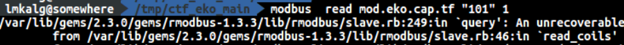
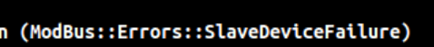
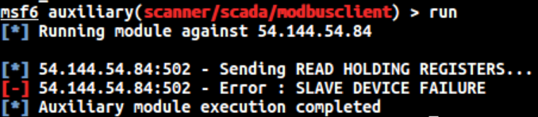
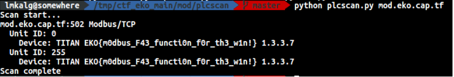

Challenge Data
- Name: Mod
- Category: Misc
- Points: 473/500
- Description: "Can you tell us what is the product running in this sofware from Area 43?" mod.eko.cap.tf port 502
Solution
I did an Nmap against this server at that port and figured it out that was running some service which was capable of talking the MODBUS protocol. I've never dealt with this kind of protocol/services so I have to start looking for information about it in Google.
I downloaded/use several tools: * modpoll * Metasploit module for modbus * [pymodbus] (https://pymodbus.readthedocs.io/en/latest/readme.html) * modbus-cli
All of them always raised me errors:   
I continued looking for more info/tool, until I found one that gave me the answer I was looking for :). Thanks: plcscan 